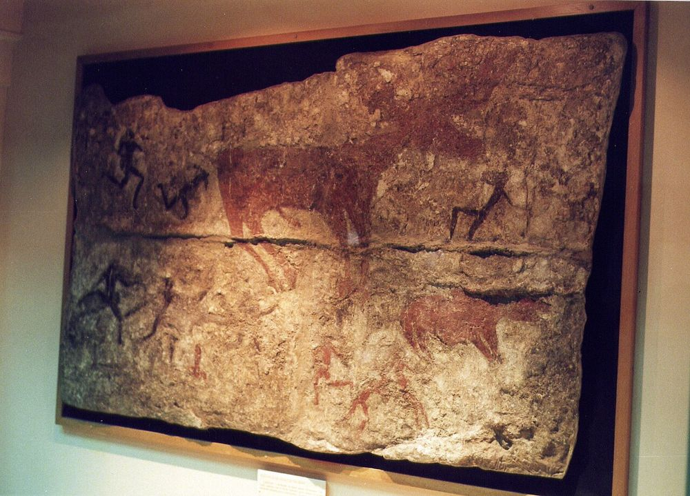
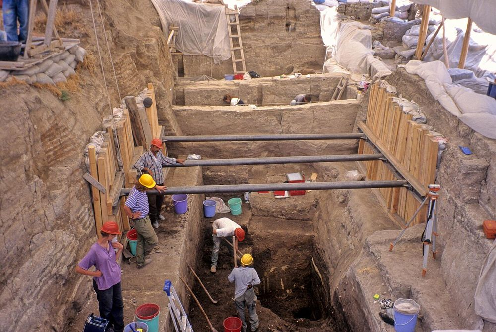
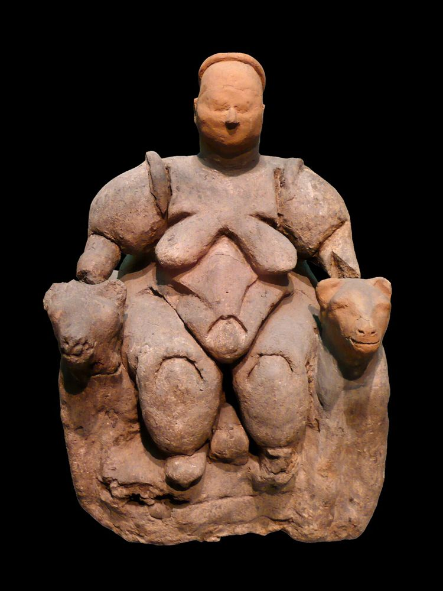

1Dünyanın ilk şehirlerinden biri
Konya Ovası'nda, Çumra ilçesi yakınlarındaki Çatalhöyük, yaklaşık MÖ 7400 ile MÖ 6200 arasında, 1.000 yıldan uzun bir süre boyunca kesintisiz yerleşim görmüş bir Neolitik (Cilalı Taş Devri) yerleşimidir.
Burada aynı anda binlerce kişi yaşıyordu. İnsanlar buğday ve arpa yetiştiriyor, koyun ve keçi besliyor, çevrede avlanıyordu. Çatalhöyük, insanlığın avcı-toplayıcılıktan yerleşik tarım toplumuna geçişini anlamamız için en önemli yerlerden biri kabul edilir.

2Sokaksız bir şehir
Çatalhöyük'ün en tuhaf özelliği sokaklarının olmamasıdır. Kerpiçten yapılmış evler, bal peteğindeki gözler gibi duvar duvara bitişik inşa edilmişti. Evlerin arasında yürüyecek yol yoktu.
İnsanlar damların üzerinde dolaşıyor, evlerine tavandaki bir açıklıktan tahta bir merdivenle iniyordu. Bu açıklık aynı zamanda ocaktan çıkan dumanın dışarı atıldığı bacaydı. Düz damlar ise bir tür ortak meydan ve sokak işlevi görüyordu. İnsanlar orada çalışıyor, buluşuyor ve muhtemelen sıcak yaz gecelerinde uyuyordu.

3Ev içinde hayat
Evlerin içi dikkatlice düzenlenmişti. Oturmak ve uyumak için yükseltilmiş platformlar, yemek pişirmek için ocaklar ve fırınlar vardı. Duvarlar düzenli olarak beyaz kille sıvanıyordu. Bazı evlerde bu sıva katmanlarının sayısı yüzü aşıyor.
Duvarlar boğa başları, av sahneleri, geometrik desenler ve hatta bir yanardağ patlamasını gösterdiği düşünülen resimlerle süslenmişti. Bazı evlerin duvarlarına gerçek boğa boynuzları yerleştirilmişti.
Ölüler çoğu zaman evlerin tabanındaki platformların altına gömülüyordu. Yani insanlar atalarının üzerinde yaşıyordu. Eski bir ev terk edildiğinde içi doldurulup üzerine yeni bir ev yapılıyordu. Bu yüzden Çatalhöyük katman katman yükselen bir tepeye, yani höyüğe dönüştü.

4Keşif ve bugün
Çatalhöyük 1958'de İngiliz arkeolog James Mellaart tarafından fark edildi ve 1961-1965 yılları arasında kazıldı. 1993'ten itibaren Ian Hodder önderliğinde uluslararası bir ekip kazılara yeniden başladı ve 25 yıl boyunca çalıştı.
Buluntuların önemli bir kısmı Ankara'daki Anadolu Medeniyetleri Müzesi'nde sergileniyor. Bunların en ünlüsü, iki yanında kedi benzeri hayvanlar bulunan bir taht üzerinde oturan kadın heykelciğidir. Yerleşim 2012'de UNESCO Dünya Mirası Listesi'ne alındı.
💡 Biliyor muydun?
- Çatalhöyük'teki bir duvar resminin, yakındaki Hasan Dağı'nın patlamasını gösteren dünyanın en eski haritası ya da manzara resmi olabileceği öne sürüldü. Bu yorum tartışmalıdır.
- Yerleşimdeki evler o kadar benzer ki, araştırmacılar burada büyük bir zengin-yoksul farkı olmadığını düşünüyor.
- Çatalhöyük adı, höyüğün iki tepeden oluşan çatal biçiminden gelir.
✅ Kaynaklar
📷 Görseller
- Kapak: Murat Özsoy 1958 · CC BY-SA 4.0 · Wikimedia Commons
- Çatalhöyük'ten çıkarılan duvar resimleri (Ankara, Anadolu Medeniyetleri Müzesi): Klaus-Peter Simon · CC BY 3.0 · Wikimedia Commons
- Çatalhöyük'te derin kazı çukuru: Mark Nesbitt from London · CC BY 2.0 · Wikimedia Commons
- Ünlü 'Çatalhöyük Oturan Kadın' heykelciği (Anadolu Medeniyetleri Müzesi): Nevit Dilmen (talk) · CC BY-SA 3.0 · Wikimedia Commons